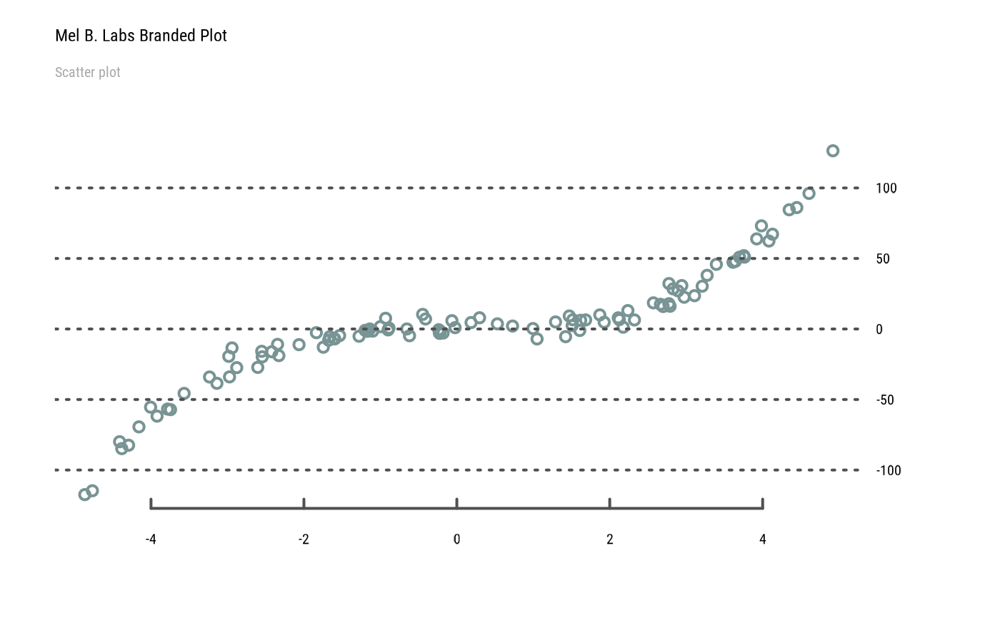
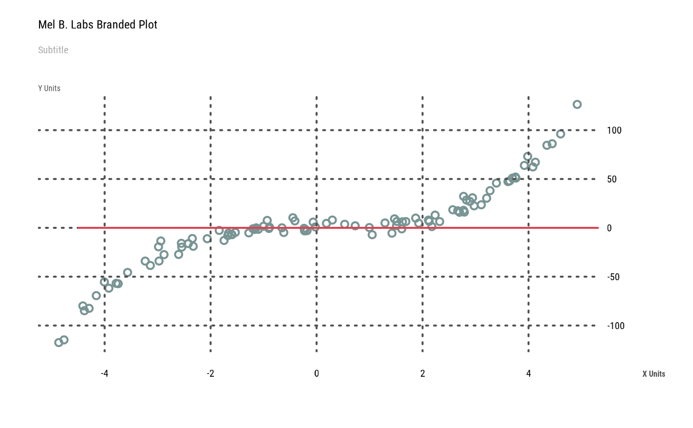
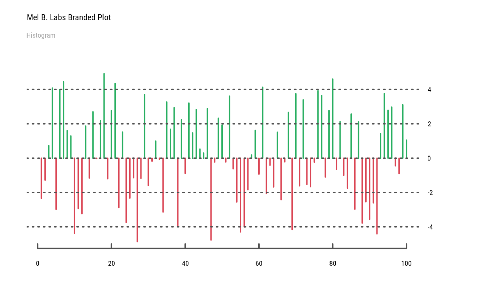

Shorthand function to generate base R plots with custom Bootstrap branding. Many tips derived from r-charts.com, since base R graphic documentation is often lacking.
Arguments
- x, y
the
xandyarguments provide the x and y coordinates for the plot. Any reasonable way of defining the coordinates is acceptable. See the functionxy.coordsfor details. If supplied separately, they must be of the same length.- axes
position of X (
bottomortop) and Y (leftorright) axes (default:bottomright)- main
a main title for the plot, see also
title.- sub
a subtitle for the plot.
- xlab
a label for the x axis, defaults to a description of
x.- ylab
a label for the y axis, defaults to a description of
y.- ...
Arguments passed on to
graphics::plot.defaultx,ythe
xandyarguments provide the x and y coordinates for the plot. Any reasonable way of defining the coordinates is acceptable. See the functionxy.coordsfor details. If supplied separately, they must be of the same length.type1-character string giving the type of plot desired. The following values are possible, for details, see
plot:"p"for points,"l"for lines,"b"for both points and lines,"c"for empty points joined by lines,"o"for overplotted points and lines,"s"and"S"for stair steps and"h"for histogram-like vertical lines. Finally,"n"does not produce any points or lines.xlimthe x limits (x1, x2) of the plot. Note that
x1 > x2is allowed and leads to a ‘reversed axis’.The default value,
NULL, indicates that the range of the finite values to be plotted should be used.ylimthe y limits of the plot.
loga character string which contains
"x"if the x axis is to be logarithmic,"y"if the y axis is to be logarithmic and"xy"or"yx"if both axes are to be logarithmic.anna logical value indicating whether the default annotation (title and x and y axis labels) should appear on the plot.
frame.plota logical indicating whether a box should be drawn around the plot.
panel.firstan ‘expression’ to be evaluated after the plot axes are set up but before any plotting takes place. This can be useful for drawing background grids or scatterplot smooths. Note that this works by lazy evaluation: passing this argument from other
plotmethods may well not work since it may be evaluated too early.panel.lastan expression to be evaluated after plotting has taken place but before the axes, title and box are added. See the comments about
panel.first.aspthe \(y/x\) aspect ratio, see
plot.window.xgap.axis,ygap.axisthe \(x/y\) axis gap factors, passed as
gap.axisto the twoaxis()calls (whenaxesis true, as per default).
Examples
set.seed(1)
x <- runif(100, min = -5, max = 5)
y <- x ^ 3 + rnorm(100, mean = 0, sd = 5)
plot(x, y, main="Mel B. Labs Branded Plot", sub="Scatter plot")
#> Error : thematic doesn't (yet) support the 'agg_record_1484652551' graphics device. Please report this error to https://github.com/rstudio/thematic/issues/new

plot(x, y, nx=NULL,
main="Mel B. Labs Branded Plot", sub="Subtitle",
xlab="X Units", ylab="Y Units")
#> Error : thematic doesn't (yet) support the 'agg_record_1484652551' graphics device. Please report this error to https://github.com/rstudio/thematic/issues/new
abline(h=0, col=pal("red"), lwd=2)

plot(x, type="h", col=pal(c("red", "green"))[(x > 0) + 1],
main="Mel B. Labs Branded Plot", sub="Histogram")
#> Error : thematic doesn't (yet) support the 'agg_record_1484652551' graphics device. Please report this error to https://github.com/rstudio/thematic/issues/new

par("fg")
#> [1] "black"
palette()
#> [1] "black" "#DF536B" "#61D04F" "#2297E6" "#28E2E5" "#CD0BBC" "#F5C710"
#> [8] "gray62"